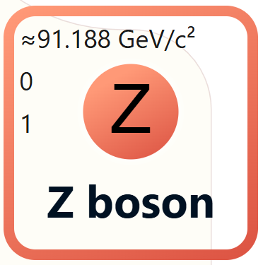

Image Credit: CMS Experiment
< Back
The Z boson is one of the four fundamental force carrier particles in the Standard Model of particle physics. It is responsible for mediating the weak nuclear force.

The Z boson is electrically neutral and has a mass approximately 91 times that of a proton.
Image Credit: CMS Experiment